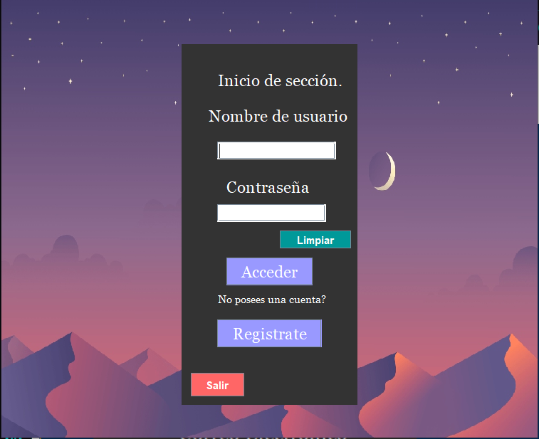

Gestión de Usuarios de una empresa.

Este proyecto consiste en que un usuario puede agregar, eliminar y modificar los datos de un usuario dentro de la empresa y asi manejar sus datos.
Esta app posee un login en el cual el usuario puede iniciar sección o si no posee una cuenta registrarse. Estos datos son manejados mediante una base de datos.
Programa multitarea (en consola)

Este proyecto consiste 3 secciones.
Manejo de Contactos y Eventos
En esta sección el usuario puede decidir que desea gestionar si los contactos o los eventos.

Aqui se pueden gestionar los contactos de la agenda.
Conversor de unidades
En esta parte se puede elegir entre convertir monedas o temperaturas. Es decir, puede convertir de dolar a peso o de euro a peso y de grados Celcius a Kelvin y viceversa.
Por aqui el programa te permite hacer operaciones básicas de matemáticas como sumar, restar, multiplicar y dividir dos o más números.